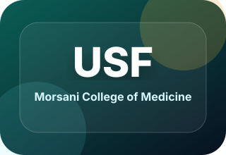
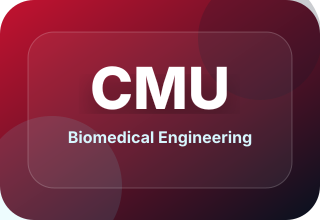

Medical Imaging
Imaging-centered research informed by biomedical engineering and clinical medicine.
Biology • Biomedical Engineering • Medicine
MD Candidate | Biomedical Engineer | Imaging & Clinical Outcomes Research
Physician and Scientist in training focused on translating engineering, imaging, and machine learning into clinically meaningful tools for diagnosis, risk stratification, and patient-centered outcomes.
Engineering perspective. Clinical purpose. Data-informed care.
About
My training began with a foundation in biology, expanded through graduate study in biomedical engineering, and now continues through medical school. This path has shaped how I approach clinical problems: first by understanding the underlying biology, then by applying quantitative tools, imaging systems, and data-driven methods to improve care.
I am especially interested in medical imaging, cardiology, machine learning, health disparities, global health, biomedical device evaluation, and translational research that connects technical innovation with practical clinical decision-making.
Focus Areas
Imaging-centered research informed by biomedical engineering and clinical medicine.
Cardiovascular physiology, imaging systems, and data-driven approaches to heart disease.
Data-driven approaches to clinical outcomes, risk stratification, and decision support.
Research focused on survival, comorbidities, concurrent medications, and senior cancer populations.
Studying inequities in access, outcomes, and care delivery to support more equitable medicine.
Understanding health systems, resource variation, and population-level approaches to care.
Research Experience
Machine Learning • Oncology • Outcomes Research • Health Equity
Conducted machine learning analysis as part of a multidisciplinary team to develop and validate a natural language processing (NLP) model extracting PSA values from clinical notes, enabling machine learning analysis of progression-free survival in older prostate cancer patients.
Ultrasound • Biomedical Engineering • Cardiology • Imaging Systems
Designed and tested an ultrasound probe within a circulatory loop simulating human cardiac function, contributing to thermal strain ultrasound technology for plaque composition analysis.
Molecular Biology • Sequencing • Bioinformatics
Performed molecular biology experiments and sequencing data analysis, including RT-PCR, RNA-seq, and ChIP-seq. Gained experience with IRB protocols, biobanking, and bio-robotic workflows for COVID-19 testing.
Scholarship
Published • Clinical NLP • Oncology
Extermann M, Carranza E, Haddadan S, Williams V, Sehovic M, Geiss R, Sam L, El Naqa I, Thieu T. Journal of Geriatric Oncology. 2025.
View articlePublished • Cardiology • Health Disparities
Kaniper S, Lynch D, Owens SM, Ibric L, Vabishchevich Y, Nyantakyi N, Chun F, Sam L, Fabrizio C, Hamad E, Gerhard GS. Journal of Personalized Medicine. 2024.
View on PubMedPublished • Molecular Oncology
Jin Q, Noel O, Nguyen M, Sam L, Gerhard GS. European Journal of Cancer Prevention. 2018.
View on PubMedManuscript
Sam L, Morris HC, Aboul-Nasr Y, et al. Integrated infectious disease and interventional radiology management.
Submitted Abstract • Imaging Engineering
Sam L, Kim K, Chalacheva P.
Submitted Abstract • Medical Education
Iginla B, Okundaye O, Udongwo A, Muhumuza A, Sahoo A, Sam L, Ofoegbu E, Hashimoto D.
Education

Morsani College of Medicine, University of South Florida • Anticipated 2026

Carnegie Mellon University • 2021–2022
Temple University • 2014–2018
Skills
Biomaterials, Biomechanics, Immunoengineering, Clinical research, Quality improvement.
Ultrasound Systems, Neuroimaging, Computational Modeling, Biosignal Processing, MATLAB.
Python, Unix/Linux systems, NGS data analysis, BLAST, Machine learning, Data visualization.
Leadership & Service
Research Chair, Student National Medical Association — University of South Florida Morsani College of Medicine, Class of 2026.
Clinic Volunteer — Bridge Clinic,Soup Kitchen.
Student Member — American Society of Clinical Oncology, Association of Black Cardiologists, Society of Interventional Radiology.
Quality Improvement Student Lead — QI projects focused on quality, cost, access, productivity and health systems engineering.
Reading
A graphic exploration of logic, mathematics, philosophy, and the search for certainty.
A study of disciplined financial behavior, long-term decision-making, and practical wealth habits.
Hobbies
I do enjoy coaching U19 youth soccer, building the values of trust and teamwork in my players.
Contact
Open to research collaboration, mentorship, imaging-focused projects, cardiology research, health disparities work, global health initiatives, and academic opportunities.